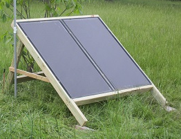
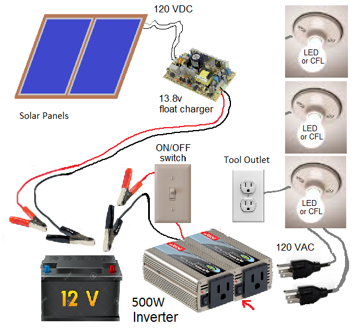
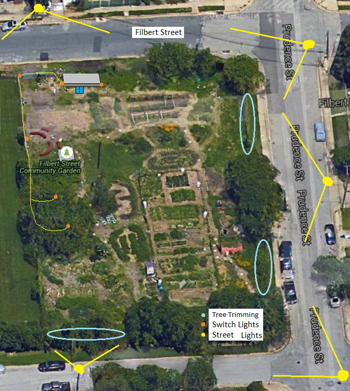

Clean Renewable Energy Project for Curtis Bay Students!

Bob Bruninga, WB4APR
US Naval Academy
lastname at usna dot edu
Solar Projects for Youth: The goal of this project is just as much to provide solar power for the Filbert Street Garden as it is to show the value of solar power to a clean renewable energy future. Two panels (like the ones shown at right) have been donated through the Annapolis Friends Meeting camp solar initiative to provide about 80 watts of solar for night lighting, cellphone charging and small tool use and other applications. The solar power maintains charge on a pair of 12v car batteries that in turn can provide 12VDC or 120 VAC through an Inverter for daytime tool or nighttime lighting use. The capacity of the system is 5 Amps for 30 minutes tool use, or Lights for 4 hours.
 Neighborhood: The garden is in a nice setting, right next to the historical brick water tank (copious free water!) and across the street from the local Elementery School as shown. The detail on light placement is shown further down this page.
Neighborhood: The garden is in a nice setting, right next to the historical brick water tank (copious free water!) and across the street from the local Elementery School as shown. The detail on light placement is shown further down this page.
Tree Trimming: Of first importance for night time illumination is simply trimming the foliage around the fence to let the many existing street lights into the garden as shown on the image below. The fence areas to be kept trimmed are marked in blue.
Proposed Electric System: Since there is no grid service to the property, this system will operate off-grid. With the 80 watt panels, the average power available should be about 320 Watt-hours per day. This can power as many as ten modern LED bulbs (60W equivalent) for about 4 hours per night. In this system, the output of the solar panels is 140 VDC which is immediately downconverted to 13.8 volts to maintain the charge on a pair of 12 volt car batteries using any readily available DC/DC switching power supply such as the 15 Volt 3 Amp power supply shown above for about $9 each.
 Solar Garden Lights: Most of the bright 120 volt LED lights will be on a switch and draw a considerable amount of power and should be off when not in use. It might be nice to have garden users bring in their own small solar garden lights to light their particular plots. These lights will be in bright sun all day and will make a nice addition to the garden at night.
Solar Garden Lights: Most of the bright 120 volt LED lights will be on a switch and draw a considerable amount of power and should be off when not in use. It might be nice to have garden users bring in their own small solar garden lights to light their particular plots. These lights will be in bright sun all day and will make a nice addition to the garden at night.
Donating Solar Garden Lamps: It might also be worthwhile accepting donations of old worn-out not-working solar garden lamps as a possible youth project. The garden solar lamps are a very popular consumer item and are very low cost. But also many of them are so cheap that once the internal batteries wear out, people just buy more rather than replace the expensive rechargable batteries. It is possible to just connect the internal LEDs in these abandoned lights to a 5v source and wire these to a 5v power supply from the 12v batteries. But then distribution wires have to be run to each one. Maybe placing these lamps along the fence will work. [Update: we just purchsed a dozen new solar lamps to accent the trails at night].
System Wiring Concept: As shown in the diagram below, the bright 60W equivalent LED bulbs will be powered at 120v VAC from a DC/AC inverter from the car batteries. The main switch activates 12v to the inverter. When the inverter is on, the lights are on, and the inverter must be off to turn off the lights. Lights over the picinc table and black/board area will have individual switches. A few lights are always on to remind the last person to turn it off so that the inverter is not left on all night long drawing unnecessary current.
 . 
Bob Bruninga, WB4APR,
US Naval Academy
lastname @ usna dot edu